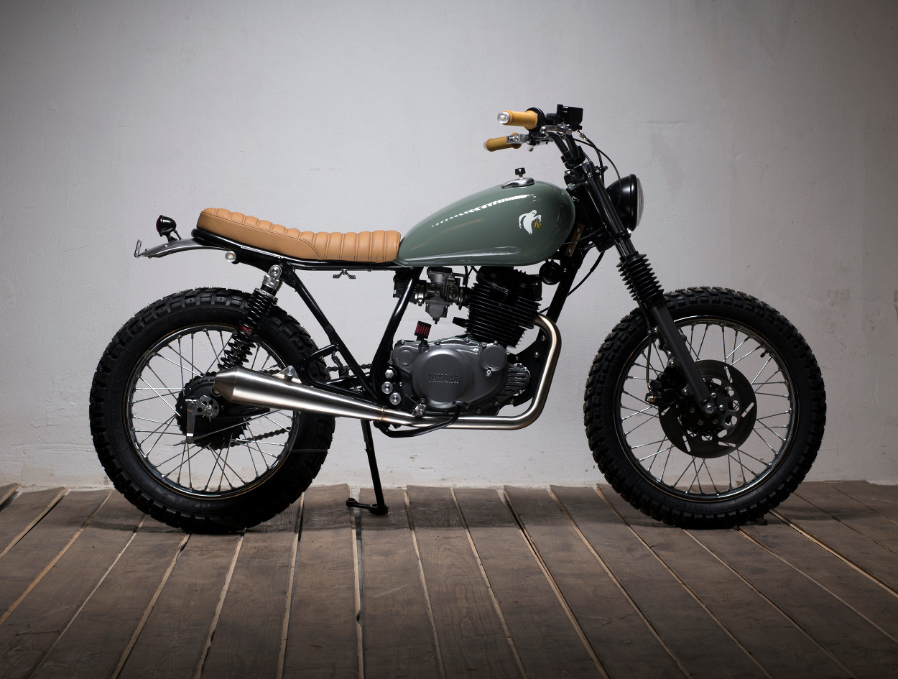
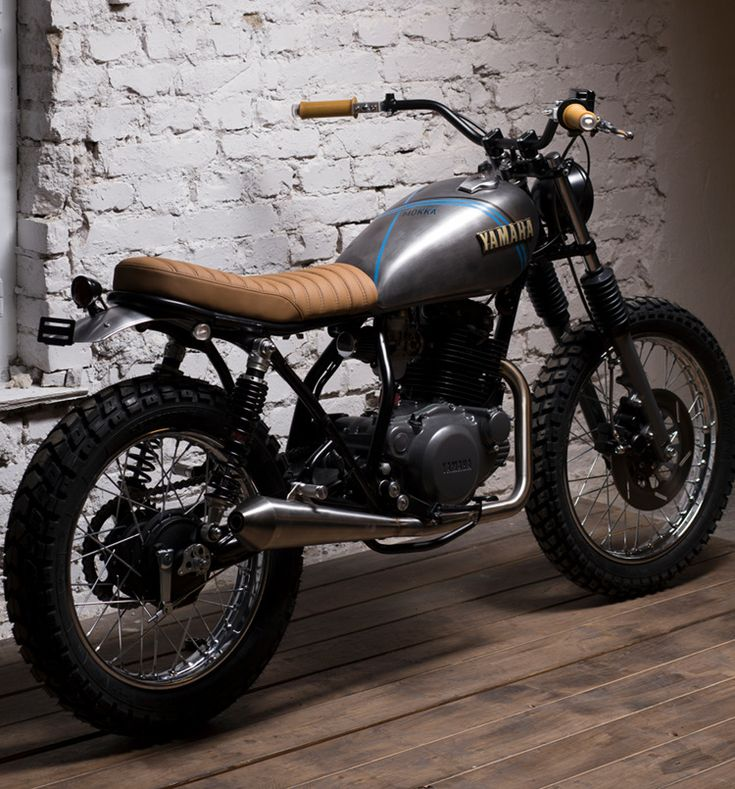

The Yamaha Scrambler stands as a testament to the enduring allure of adventure and exploration on two wheels. Emerging from Yamaha's legacy of innovation and performance, the Scrambler embodies the spirit of rugged versatility and off-road capability. With its distinctively retro-inspired design, featuring high-mounted exhaust pipes, knobby tires, and a raised handlebar, the Yamaha Scrambler exudes a timeless charm that harks back to the golden era of motorcycling. This classic aesthetic is complemented by modern engineering and technology, ensuring a thrilling ride on any terrain.
Equipped with a potent engine and agile chassis, the Yamaha Scrambler is equally at home navigating city streets as it is conquering dirt trails and backcountry paths. Its lightweight construction and responsive handling make it a joy to ride, inspiring confidence in riders seeking adventure beyond the beaten path.
From weekend excursions to daily commutes, the Yamaha Scrambler offers an exhilarating blend of performance, style, and versatility. Whether carving through winding mountain roads or exploring remote wilderness, riders can count on the Yamaha Scrambler to deliver an unforgettable experience that embodies the spirit of freedom and exploration on two wheels.